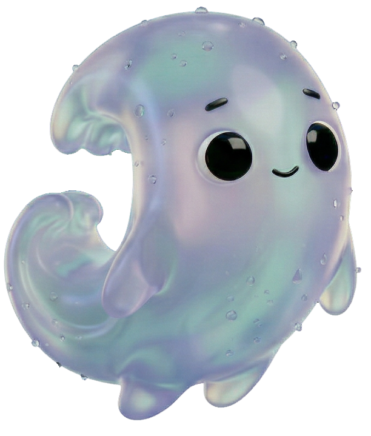
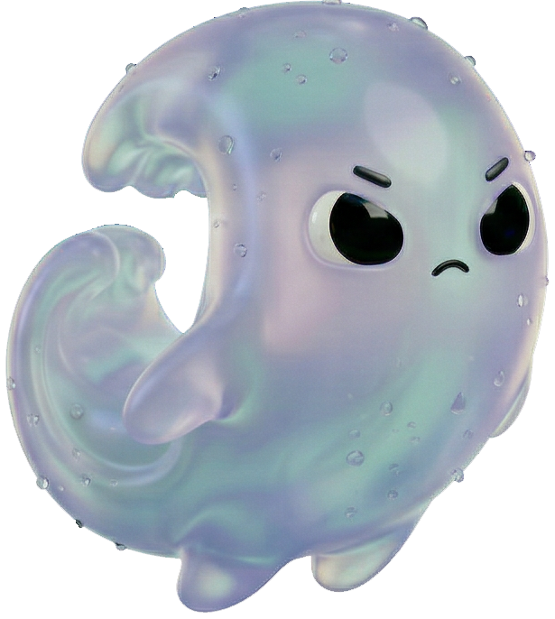
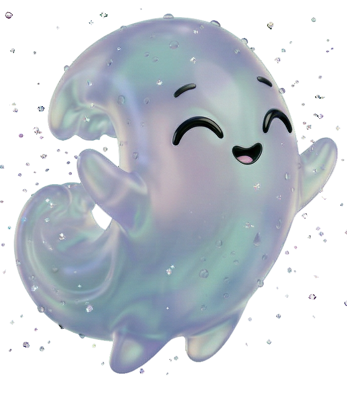
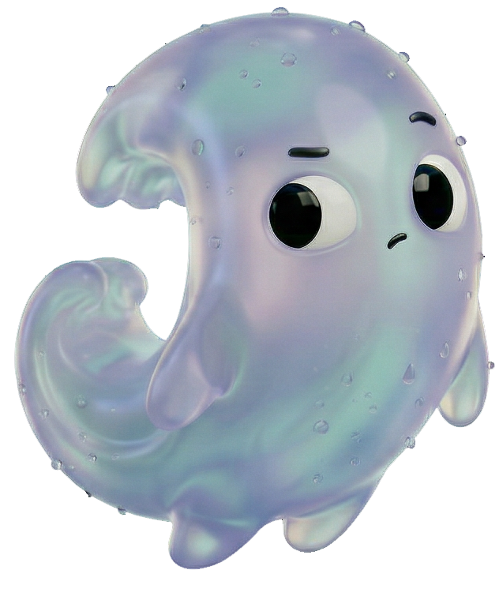
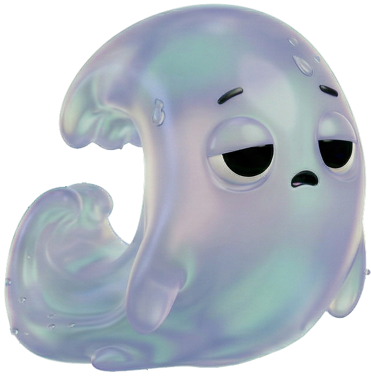
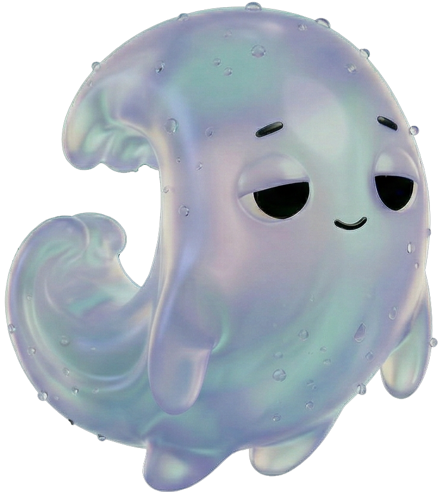
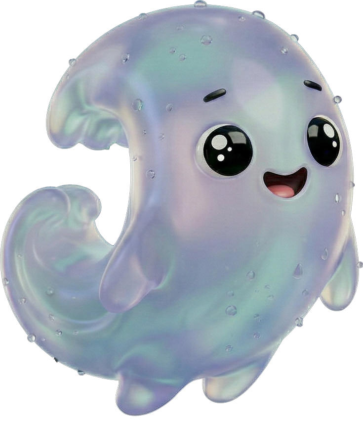
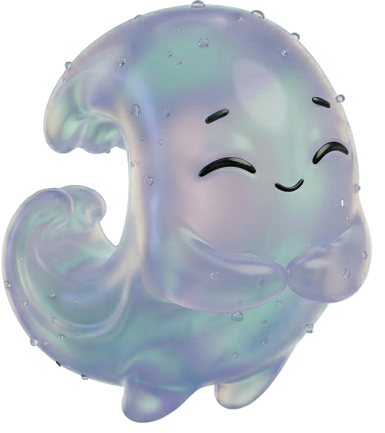

Identity


Meet Nami
Character poses — 10 expressions








Nami (波) Japanese for "wave."
Anxiety is a wave. You can't stop it. You can't ignore it. But you can learn to ride it. Nami doesn't promise there won't be waves, it promises to be there when they arrive.
The character shares its name with the app. That makes it more personal, it's not "the app," it's Nami. A friend who happens to know exactly what to do. Warm, direct, and slightly humorous. Not a bot. Not a doctor.
#1B1A51
Deep Ocean
#99A8F9
Lavender Wave
#00BFCA
Foam Teal
#F0F0F0
Sea Foam White
gradient
Iridescent
The palette is built around one idea: the ocean at night.
- Storm modeThe crisis entry point. "Hey, I've got you." One screen. One action. No choices.
- The ShoreThe calm home. "Hey, Sofía." Quick access to all paths — therapy, check-in, or crisis.
- The waveTransitional empathy moment. "I'm here, follow me." Emotional bridge before instruction begins.
- Still waterGuided action during episode. "Let's do this together." Body-first, one screen at a time.
- After the waveCelebration and logging. "You got through it." Episode saved, ready for therapy.


El resultado de Stitch analizó bien las instrucciones del prompt y generó una designación system coherente con lo que había expresado — colores, jerarquía tipográfica y el tono visual oscuro estaban alineados. Sin embargo, el resultado visual no alcanzó lo que tenía en mente: la presencia del personaje no tenía la personalidad ni la calidez que Nami necesita para conectar con el usuario en un momento de crisis. Me confirmó que la dirección visual correcta requería decisiones de diseño propias, no generadas.